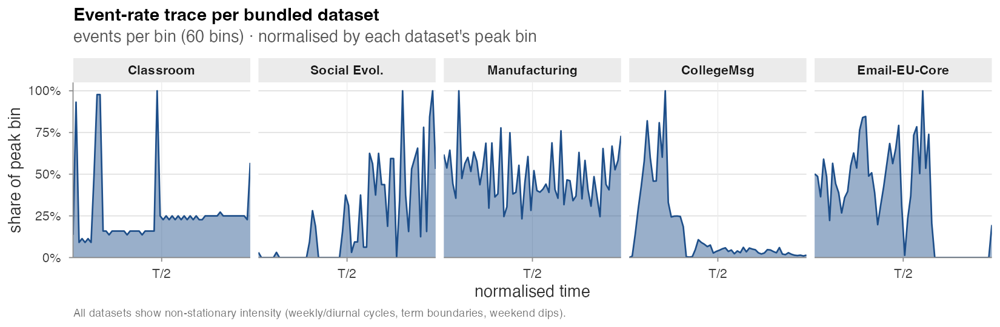
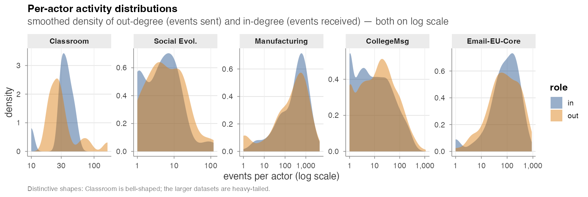

Bundled datasets
amorem ships five real-world relational-event datasets
directly, each as a tidy (time, sender, receiver, ...)
event table loadable via data(...). They span three orders
of magnitude in size and cover three interaction types — face-to-face
contact, phone calls, and email / instant messaging.
| Dataset | data(...) |
Events | Actors | Span | Rate (/day) | Interaction |
|---|---|---|---|---|---|---|
| Classroom | classroom_events |
691 | 20 | 44 d | 15.8 | face-to-face |
| Social Evolution | social_evolution_calls |
439 | 54 | 42 d | 10.4 | phone calls |
| Manufacturing | radoslaw_email |
82,927 | 167 | 271 d | 305.8 | |
| CollegeMsg | college_msg |
59,835 | 1,899 | 194 d | 308.9 | instant messages |
| Email-EU-Core | email_eu_core |
12,216 | 89 | 803 d | 15.2 |
Event-rate trace
The bundled datasets are emphatically non-stationary: term boundaries, weekly cycles, weekends, and bursty episodes all show up in the per-bin rate. This is exactly the regime the time-varying / global-covariate machinery in Estimation is built for.

- Classroom: two spikes corresponding to the two recorded sessions; otherwise quiet.
- Social Evolution: linear ramp-up — calls accumulate as the recording instrumentation rolls out.
- Manufacturing & Email-EU-Core: visible weekly modulation superimposed on a roughly stationary base rate.
- CollegeMsg: front-loaded — student onboarding traffic in the first quarter dominates the entire stream.
Per-actor activity distributions
Out-degree (events sent) and in-degree (events received), per actor, smoothed on a log scale:

- Classroom is bell-shaped on a tight log axis — small homogeneous group.
- Social Evolution and Email-EU-Core show moderately heavy tails.
- Manufacturing and CollegeMsg are unambiguously heavy-tailed across three orders of magnitude — a small core drives most of the traffic.
These differences matter for inference: the *_count
family in the Endogenous
catalogue absorbs activity heterogeneity directly, so heavy-tailed
datasets like Manufacturing and CollegeMsg make sender / receiver random
effects (or compare_models_smooth() non-linear specs) a
near- requirement for honest interpretation. See Real-data analysis for the worked
example on Classroom (where the AIC ranking flips once sender frailty is
added).
Provenance
-
Classroom —
networkDynamicCRAN package. McFarland (2001). -
Social Evolution —
goldfishGitHub package. Madan et al. (2011). -
Manufacturing — Network Repository,
ia-radoslaw-email. Michalski et al. (2014). -
CollegeMsg — SNAP,
CollegeMsg.txt.gz. Panzarasa, Opsahl & Carley (2009). -
Email-EU-Core — SNAP,
email-Eu-core-temporal-Dept3. Paranjape, Benson & Leskovec (2017). Self-loops removed.
The fourth dataset analysed by Juozaitienė & Wit (2024) — Enron — is intentionally not bundled because the only publicly archived version is an aggregated daily edge-weight table rather than the event-level slice the paper analyses.
Time conventions
Times are normalised to days since the first event
for every dataset except Classroom, which uses minutes
(its original time unit). The original Unix-epoch timestamps are
preserved as a unix_origin attribute on each event frame
where the source provided them:
Auxiliary objects
-
classroom_actors,social_evolution_actors,social_evolution_friendship— per-actor covariates and the friendship-survey event log accompanying their main event tables. -
dist_matrix— a 56 × 56 matrix of inter-state geographic distances; used by Experiment 2 in Validation experiments.
Citing the datasets
If you publish results from any bundled dataset, please cite the
original source in addition to citing amorem:
- McFarland, D.A. (2001). Student resistance: How the formal and informal organization of classrooms facilitate everyday forms of student defiance. American Journal of Sociology.
- Madan, A. et al. (2011). Sensing the “health state” of a community. IEEE Pervasive Computing.
- Michalski, R. et al. (2014). Matching organizational structure and social network extracted from email communication. New Generation Computing 32(3–4), 213–235.
- Panzarasa, P., Opsahl, T., Carley, K. (2009). Patterns and dynamics of users’ behavior and interaction: Network analysis of an online community. Journal of the American Society for Information Science and Technology 60(5), 911–932.
- Paranjape, A., Benson, A.R., Leskovec, J. (2017). Motifs in temporal networks. WSDM ’17, 601–610.
- Juozaitienė R., Wit E.C. (2024). It’s about time: revisiting reciprocity and triadicity in relational event analysis. JRSS-A 188(4), 1246–1262.